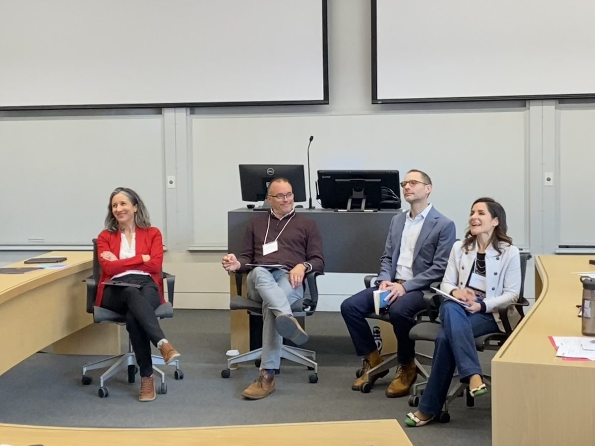
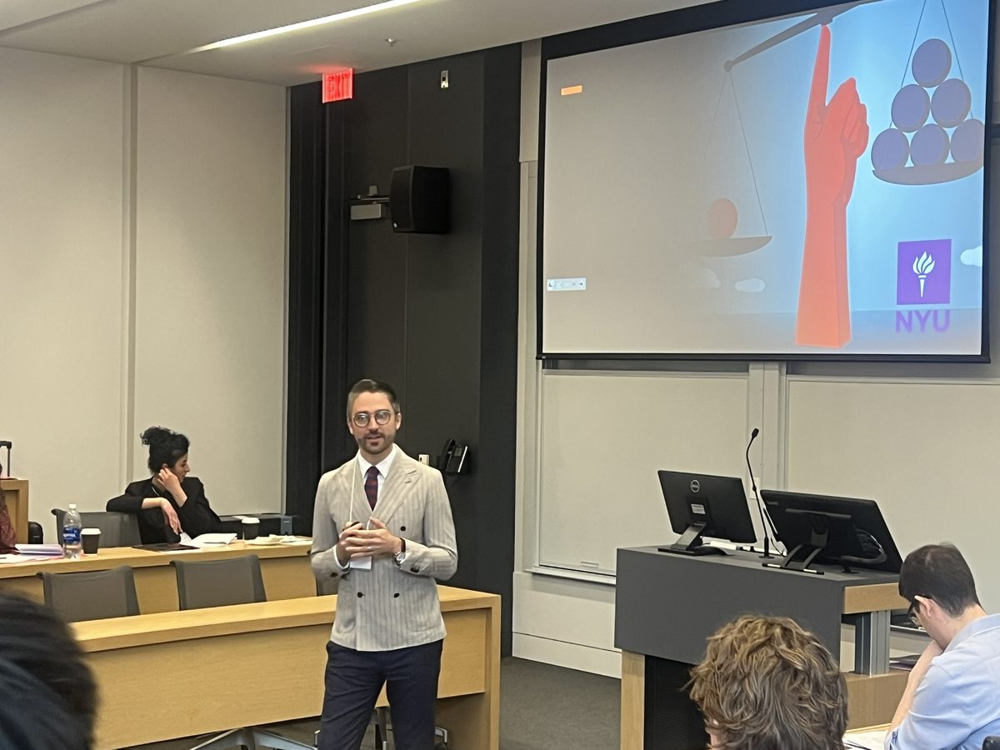
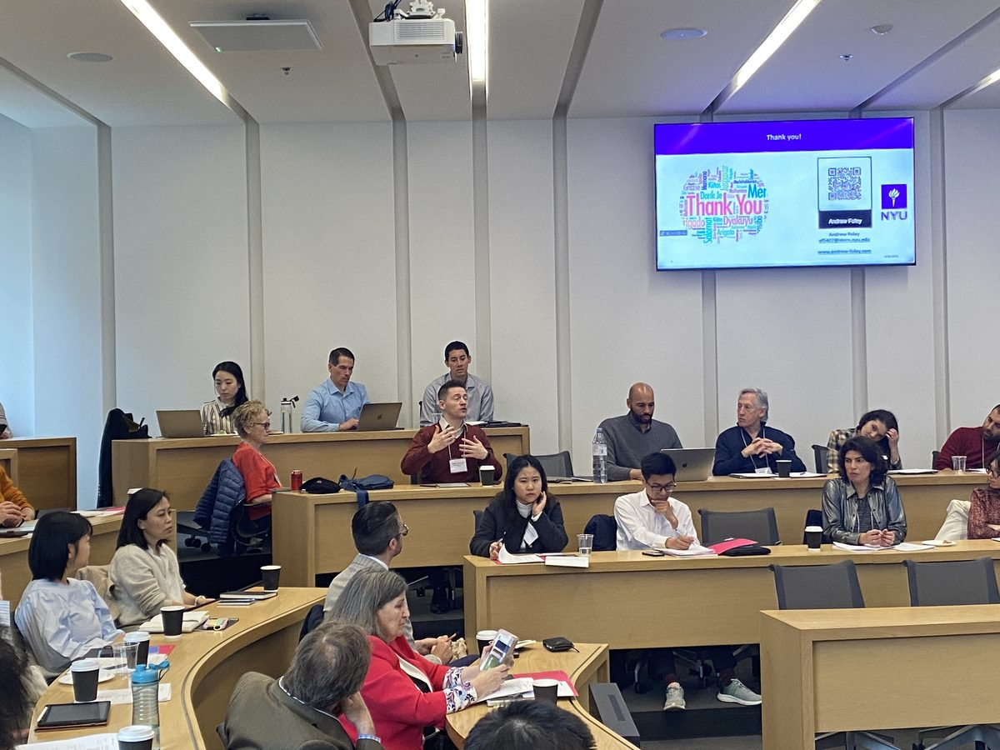
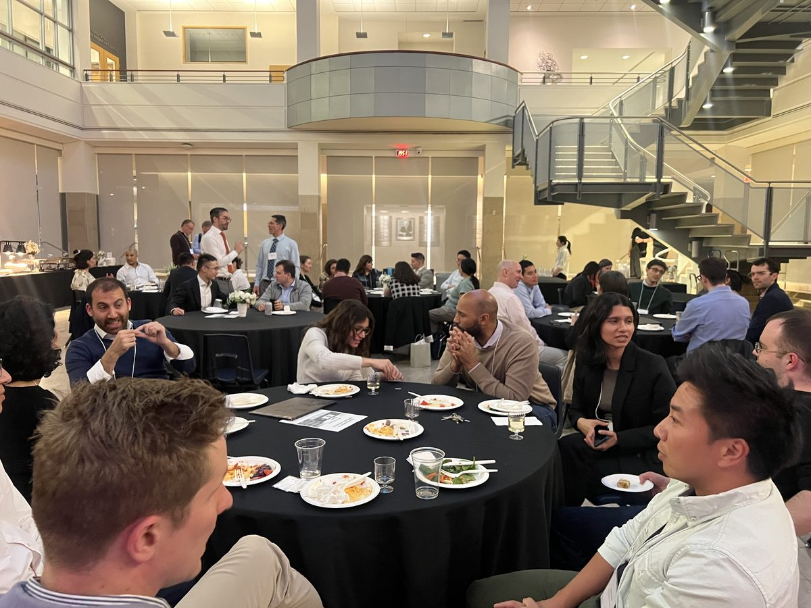
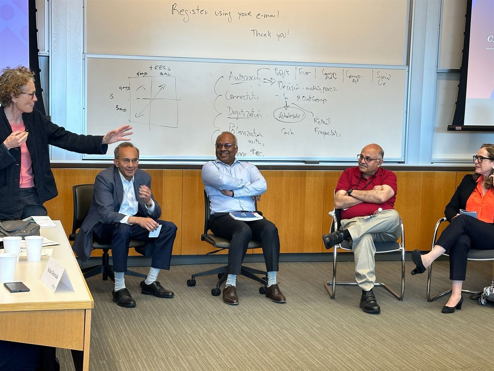
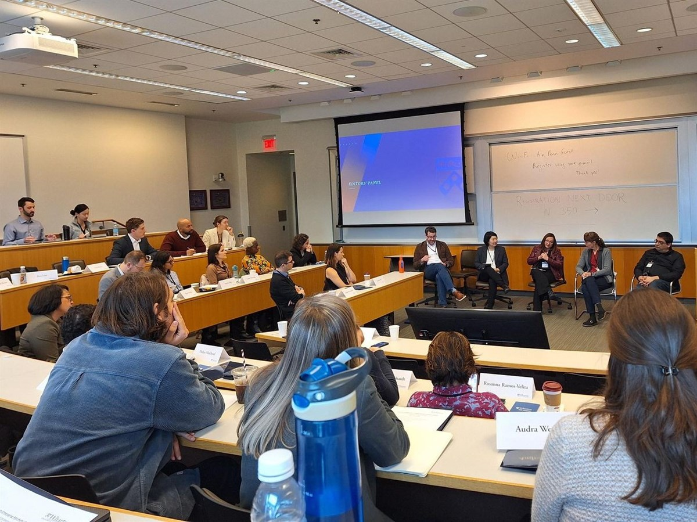

The Management in Emerging Markets (MEM) Conference brings the community together each year.
May 2027 — South Africa
Details will be announced soon. Sign up to receive conference announcements.
Olin Business School, Washington University in St. Louis
Organized by F. Christopher Eaglin (Duke University) and Tarek Ghani (Washington University in St. Louis)
Knight Center Executive Dining Room, 3rd Floor
Classroom 220
Rodrigo Canales, Caroline Fry, Shon Hiatt, Jiao Luo
Moderated by Tarek Ghani
Kate Nissen, Shubham Singh, Ruby Mittal, Rowan Clarke
Moderated by Stefan Dimitriadis
Knight Center Executive Dining Room
Leke Jegede, HK Park, Amrita Saha, Yuqing Tang
Moderated by Thomaz Teodorovicz
Daniella Laureiro Martinez, Aruna Ranganathan, Markus Taussig,
Minyuan Zhao
Moderated by Natalie Carlson
O’Donnell Lounge, Knight Center
Knight Center Executive Dining Room, 3rd Floor
Heather Berry, Seth Carnahan, Lamar Pierce
Moderated by Christopher Eaglin
Knight Center Executive Dining Room, 3rd Floor
Rotman School of Management, University of Toronto
Fleck Atrium
Fleck Atrium
Laura Doering, Chris Yenkey, Rodrigo Canales, Shon Hiatt
Moderated by Ryann Manning · Fleck Atrium
Aparajita Agarwal, Grady Raines, Zahra Hejrati, Shubham Singh, Roy Huang · Fleck Atrium
RSM 142 and RSM 147
Fleck Atrium
RSM 142 and RSM 147
Rowan Clarke, Angelo Bello, Esam Boraey, Priyam Saraf · Fleck Atrium
Lourdes Casanova
Anita McGahan, Wes Sine, Jordan Siegel
Moderated by Stefan Dimitriadis · Fleck Atrium
Fleck Atrium
Fleck Atrium
Fleck Atrium
Amrita Saha, Peter Polhill, Stefan Ivanovski, Andrew Foley
Valentina Assenova, Chris Eaglin
Brian Silverman, Lamar Pierce, Dan Wang, Sandro Cabral,
Sinziana Dorobantu
Moderated by Aline Gatignon
The conference was sponsored by the Rotman School of Management; the doctoral student sessions were sponsored by the Cornell Emerging Markets Institute.




The Wharton School, University of Pennsylvania, Philadelphia

